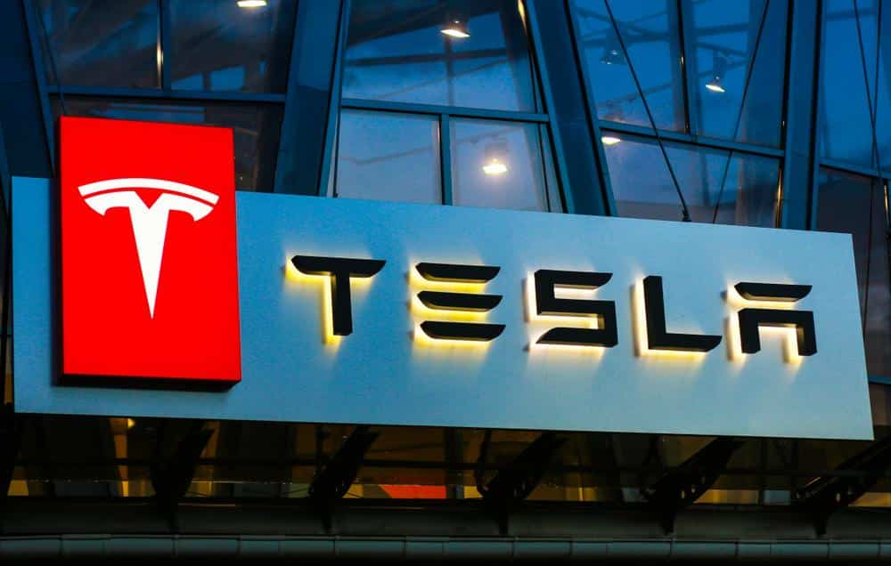
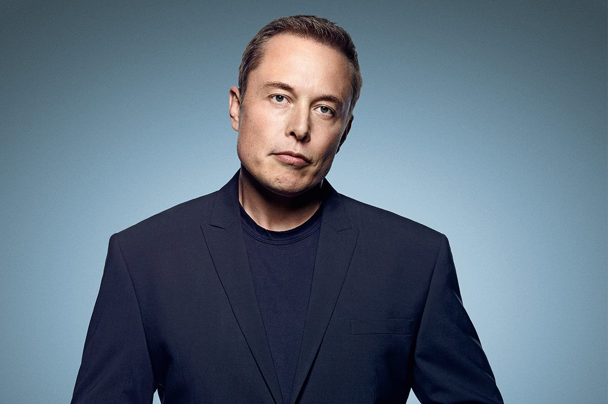

TESLA
A Tesla se diferencia por seu sistema operacional terrestre proprietário, que permite à empresa ser mais ágil, gerar soluções mais inovadoras, distribuir desempenho e funcionalidade de energia com base em novos casos de limite e proteger melhor seus veículos contra ameaças de segurança cibernética. Todos os domínios são construídos naquele único sistema operacional, refletindo uma abordagem drasticamente diferente.
A Tesla volta sua atenção para o negócio de energia (que abrange energia solar e armazenamento de energia), que há muito tempo ficou em segundo plano para colocar a linha de montagem de veículos elétricos em ordem.
Elon Musk vem transmitindo essa mensagem desde que a Tesla relatou um lucro surpresa no terceiro trimestre. Na ligação com analistas de Wall Street após os ganhos em novembro, o CEO da Tesla disse: “Por quase dois anos, tivemos que entreter uma enorme quantidade de recursos”.
Agora Musk afirma que a Tesla está pronta para “o crescimento realmente louco no futuro que posso imaginar. ... Seria difícil exagerar o grau em que a Tesla Energy será uma parte importante da atividade da Tesla no futuro”, disse ele.
Nunca se esquivando de reivindicações ou ambições ousadas, Musk disse que a Tesla Energy poderia crescer aproximadamente do mesmo tamanho que os negócios automotivos da Tesla, e a energia solar cresceria, em porcentagem, o mais rápido de todos, com o armazenamento em segundo lugar.
“Acho que com o tempo ambos crescerão mais rápido que o automotivo”, disse Musk. “Eles estão começando de uma base menor.” Ele acrescentou: “Eu acho que, especialmente, se você olhar para o crescimento ano a ano, será absolutamente incrível … ao longo de, digamos, um ano, um aumento gigantesco.”
O PLANO DA TESLA
Esse plano consiste em sete termos muito simples, são eles: conectividade, eletrificação, autonomia, sustentabilidade da bateria, modelo de negócios de dados, nova mobilidade e estruturação organizacional.
Conectividade: Pela geração de carros anteriores movidos a combustíveis fósseis, cada um deles tem um sistema completamente diferente um do outro, similares por usarem combustíveis e possuir os mesmos componentes, mas a estruturação e a falta de adaptabilidade tornam inviável a troca mesmo que necessária. Por isso, Tesla adapta os seus carros para ter atualizações constantes, tendo os mesmos privilégios aqueles que, compraram modelos mais antigos, e aqueles que compraram dos mais novos. Sendo 60%~70% tempo dos recursos de engenharia para ser gasto em garantir a compatibilidade e integração com versões anteriores.
Eletrificação: Trata-se de criar um carro que não só entrega uma vida mais sustentável, como também, uma inovação. O tópico de eletrificação é voltado para que escolher a Tesla. Justamente por quê, carros elétricos propagam apenas um terço de gasolina em comparação a um veículo comum movido a combustíveis fósseis. Além de prover uma qualidade para motoristas que o possuem tal como a possibilidade de piloto automático em longas estradas e por sua vez entretenimento.
A Sustentabilidade da Bateria: Capacidade de até mesmo em sua casa ter um posto Tesla de energia, para quê usuários do Carro, consigam recarregar até mesmo em frente de sua casa.
Com isso a acessibilidade para ter um tesla se torna a melhor opção para um desenvolvimento sustentável.
Aqui, o carro não será mais o único ponto focal, mas apenas uma parte de uma estratégia cuidadosamente calibrada para construir uma indústria completamente nova de energia em rede.
TESLA ENERGY
Musk admitiu que a Tesla “trocou” o negócio de energia em favor da expansão da produção de veículos elétricos da empresa em 2021. Com a escassez de chips e a desaceleração da cadeia de suprimentos limitando a fabricação, Musk disse que os veículos tiveram prioridade. Com mais produção de chips prevista para agora no ano de 2022, Musk disse que a produção de armazenamento e solar crescerá este ano, embora não tenha se comprometido com um volume de produção.
Nos últimos anos, o negócio solar tem sido associado a mais notícias negativas do que positivas. Mas não a nada para desanimar, os analistas que cobrem o setor solar de telhados estimam que ele pode crescer de uma estimativa baixa de 10% ao ano para até 20%, com base no desempenho das principais empresas.
No entanto, a Tesla muito elogia seu negócio de energia solar e armazenamento como fundamental para seu futuro, mesmo com as dificuldades de entrega.
Quão grande a Tesla Energy pode se tornar?
Tesla Energy, pelo fato de ser um nicho de mercado não tão concentrado e a venda ser extremamente complicada pela nossa necessidade de outros meios de energia tal como, energia hidrelétrica e nuclear. Torna um desafio para a empresa.
“Acho que geralmente há uma falta de compreensão ou apreciação pelo crescimento da Tesla Energy”, disse Musk na recente teleconferência de resultados. “A longo prazo, espero que a Tesla Energy seja do mesmo tamanho ou aproximadamente do mesmo tamanho que o setor ou negócio automotivo da Tesla.”
ELON MUSK
Dono das empresas: Tesla, SpaceX e Tesla Energy,(Antiga Solar City). Elon musk é um homem que já a muitos anos aposta na ideia de energia ser finita. Na terra ainda enfrentamos um grande problema, a dependência completa sobre combustíveis fósseis. Sabendo disso, Elon Musk investiu incontáveis somas de dinheiro para que seus carros pudessem suprir uma necessidade dos dias de hoje, que é, energia limpa e sustentável.
